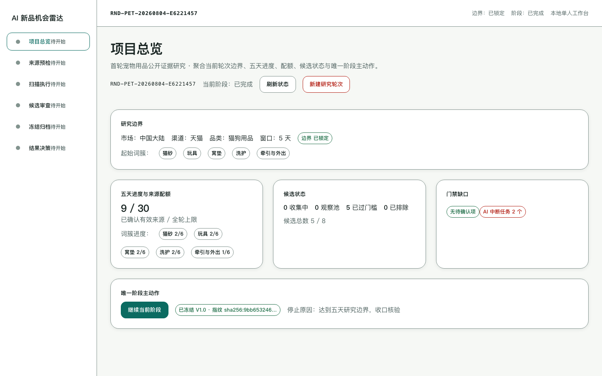
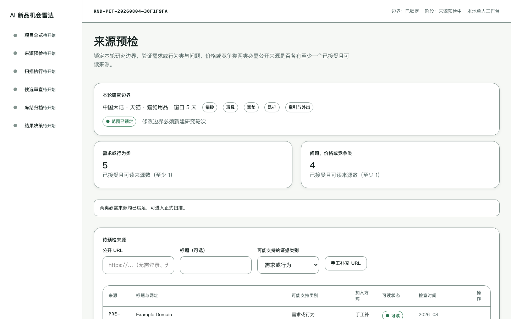
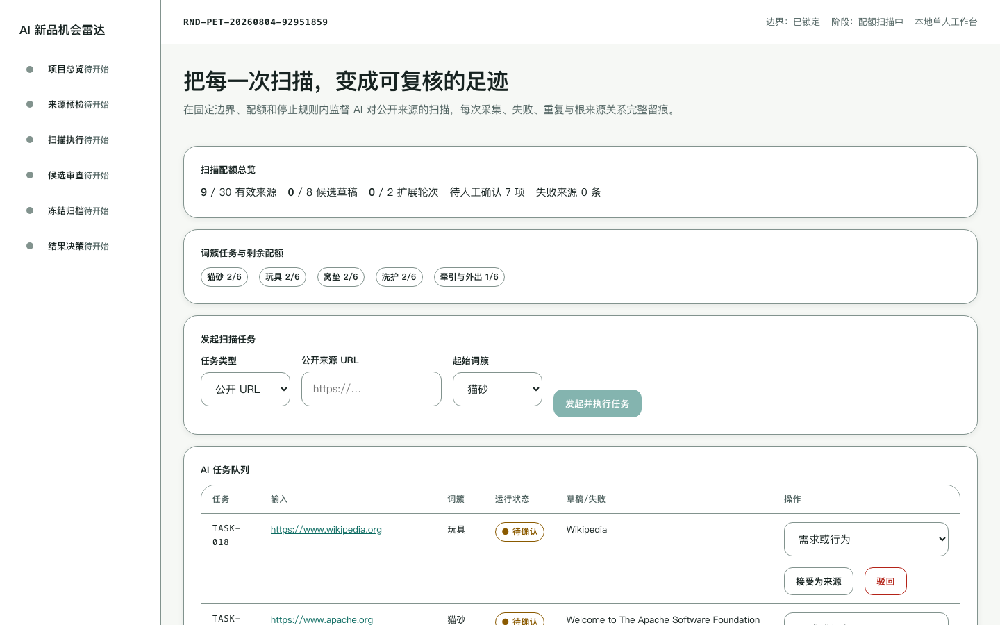
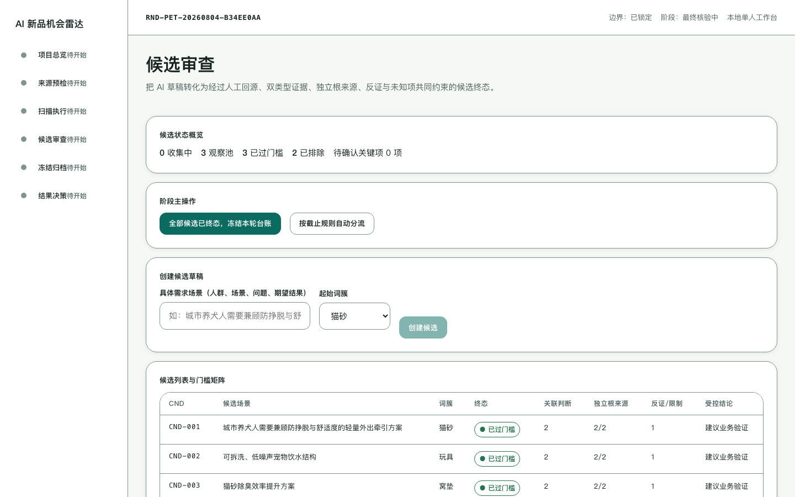
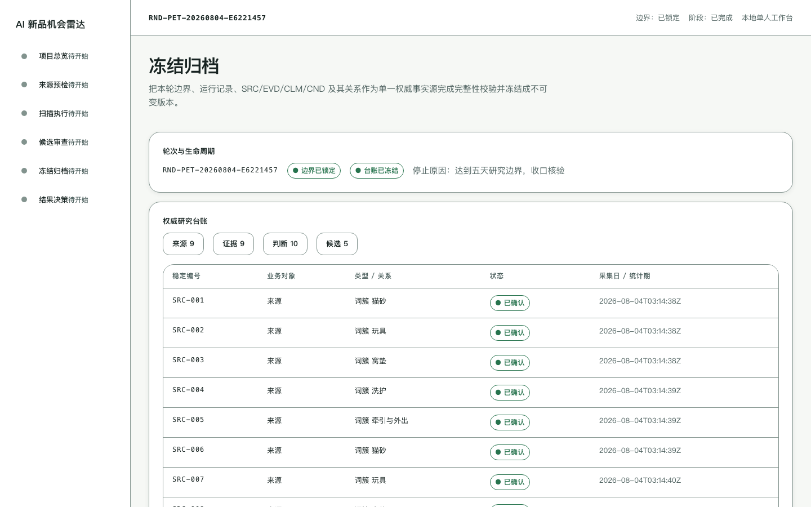
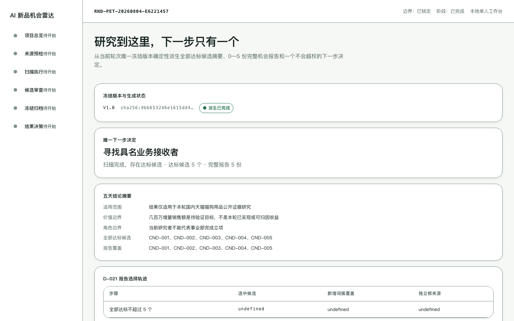

为趣然打造的单人公开证据研究工作台：五天、只靠公开免费资料，对国内天猫猫狗用品跨子类扫描，产出可回源的机会假设与唯一下一步决定。
六阶段工作台：项目总览 → 来源预检 → 扫描执行 → 候选审查 → 冻结归档 → 结果决策。






TDD 验收契约逐项真实执行，全部通过。
五个起始词簇 × 每簇 6 条、全轮 30 条、最多 8 个候选、2 轮扩展——范围可控，失败显式留痕。
双类型已确认证据 + ≥2 个独立根来源 + 候选特定反证 + 关键项 100% 人工回源，弱信号无法包装成机会。
冻结生成唯一版本号与 SHA-256 内容指纹，历史只读、跨轮只溯源，自动本地备份并可安全恢复。
0 个 → 停止公开数据路线；1-2 个 → 保留一次性人工研究；3-8 个 → 寻找具名业务接收者。
公开 URL 真实抓取与关键词检索（非演示数据），登录/付费/验证码来源一律标为不可读且不绕过。
只存最短必要摘录，不存完整网页/凭据/PII；服务只监听本机回环地址。
生产版为本地优先应用，数据保存在研究者电脑（安全边界：无账号体系，不对外网暴露）。启动命令：
cd backend && .venv/bin/uvicorn app.main:app --port 8000 启动后端
cd frontend && npm run dev 启动前端，浏览器打开 http://127.0.0.1:5173